clutter manual
A palette animation editor for indexed images. Open clutter. The numbered labels in each screenshot match the numbered notes under it.
An animation here is a list of complete palettes played over one fixed image. The pixels never change; each frame swaps the palette. On a PlayStation that means uploading a new CLUT per frame and nothing else.
1. Importing an image
Everything runs in the page; nothing is uploaded anywhere.
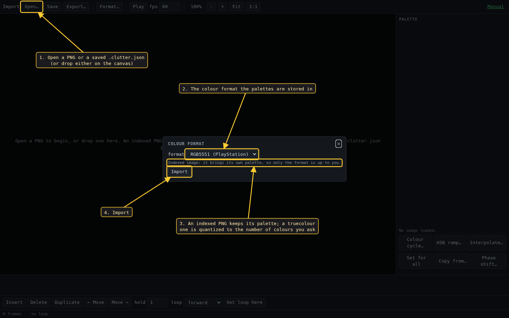
- Open… takes a PNG, or a
.clutter.jsonproject saved earlier. Dropping either on the canvas does the same. - Before the image loads you choose the colour format: RGBA8888, RGB565, or RGB5551 for the PlayStation. The screenshots in this manual use RGB5551.
- An indexed PNG keeps its own palette and indices. A truecolour PNG is quantized, and this dialog then also asks how many colours (2 to 256).
- Import loads it as an animation of one frame.
2. The window
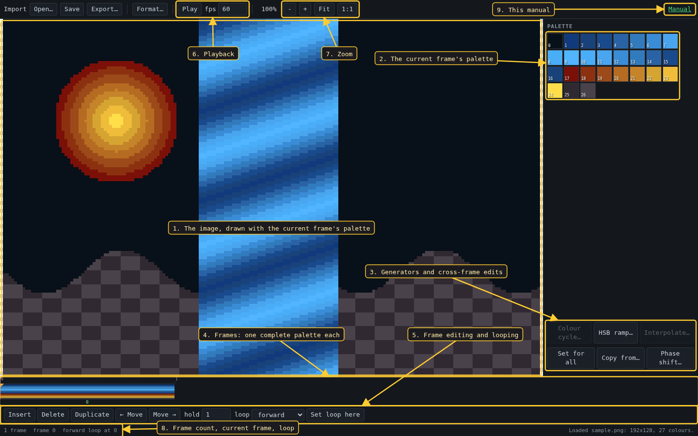
- The image, drawn with the palette of the current frame. The mouse wheel zooms.
- The palette of the current frame, one square per entry.
- The generators, which create frames, and the edits that work across frames.
- The timeline: one cell per frame, each a complete palette.
- Frame editing and loop settings.
- Play and its speed.
- Zoom: Fit fills the canvas, 1:1 shows one screen pixel per image pixel.
- Status: frame count, current frame, loop setting, and the result of the last action.
- The link to this manual.
3. Selecting and editing entries
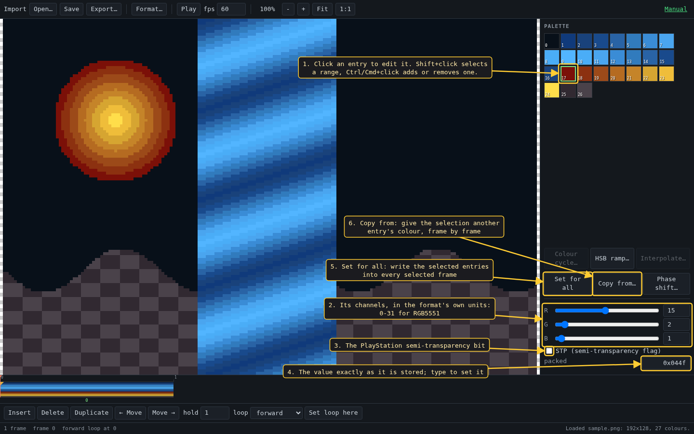
- Click an entry to select it and open it in the editor. Shift+click selects every entry between it and the last one clicked; Ctrl or Cmd+click adds or removes one. Most tools work on the selection.
- The entry's channels, in the units the format stores: 0-31 for RGB5551, so what you set is exactly what the hardware gets.
- The PlayStation semi-transparency bit. It only matters when the primitive is drawn semi-transparent; otherwise the colour draws solid.
- The packed value as stored. You can type a value here.
- Set for all writes the selected entries' colours into every frame, or into every frame of a selected span. Use it for a colour that should not animate.
- Copy from… gives the selected entries the colour of another entry, frame by frame, so if that entry animates the copies animate with it.
RGB5551 cannot hold an opaque black: 0x0000 is always transparent. The editor shows a warning under the value when an entry is set to it.
4. Colour cycle
Rotates the colours of the selected entries one step per frame, the Deluxe Paint way. Here entries 1-16 are the bands of the waterfall, so cycling them makes it flow.
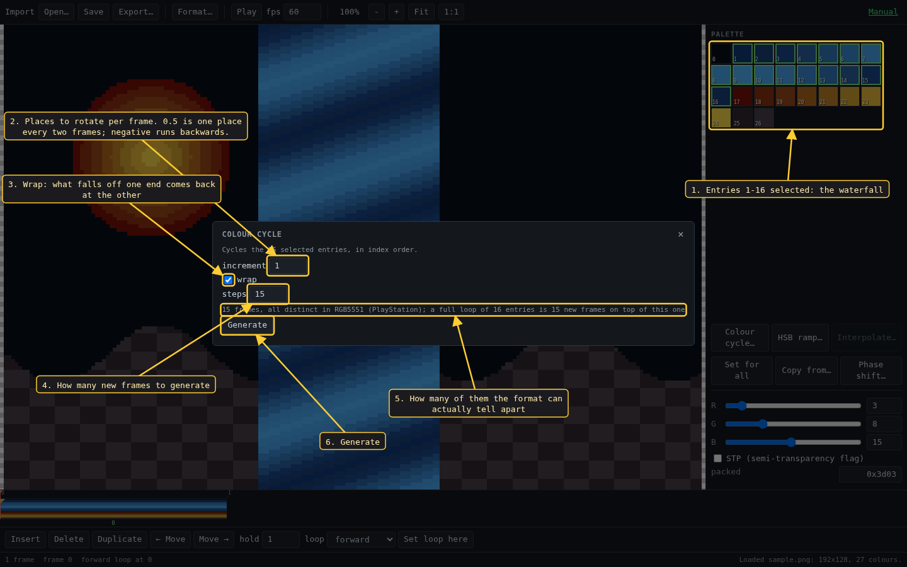
- The entries being cycled. They are cycled in index order; a selection with gaps is cycled as if it had none.
- How far the colours move each frame. 1 is one entry per frame, 0.5 is one every two frames, a negative value runs backwards.
- wrap: a colour pushed off one end comes back at the other. Off, it drops out and the emptied entries repeat their neighbour.
- How many frames to add. The default is one full turn of the selection.
- How many of those frames the format can tell apart. If two would come out identical, it says so here before you generate.
- Generate adds the frames after the current one.
5. Frames and playback
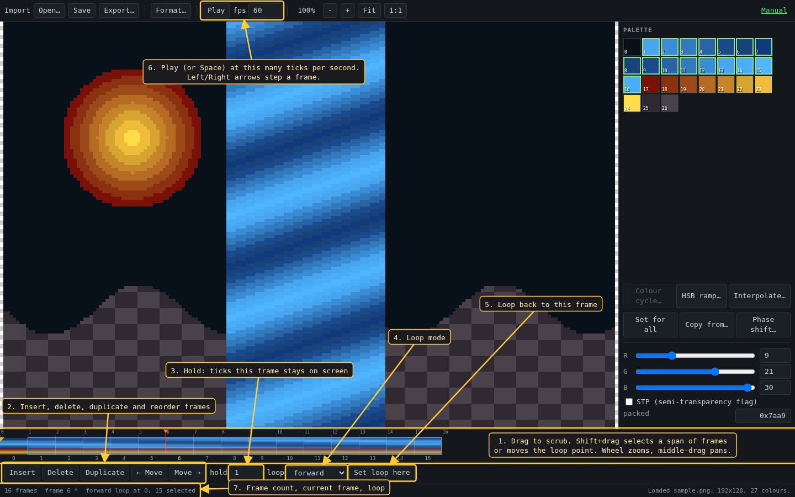
- The timeline. Drag to scrub. Shift+drag selects a span of frames, or moves the loop marker if you start on it; Esc clears the span. The wheel zooms the timeline and the middle button pans it.
- Insert, delete, duplicate, and move the current frame left or right.
- hold: how many playback ticks the current frame stays on screen.
- Loop mode: none, forward, backward, or ping-pong.
- Set loop here: after the first pass, playback loops from this frame to the end.
- Play, or Space, at this many ticks per second. The arrow keys step one frame, Home and End jump to the ends.
- Frame count, current frame and loop setting.
6. HSB ramp
Generates frames that shift the selected entries' hue, saturation and brightness. If a span of frames is selected, the ramp is applied across that span instead, and the step count comes from the span.
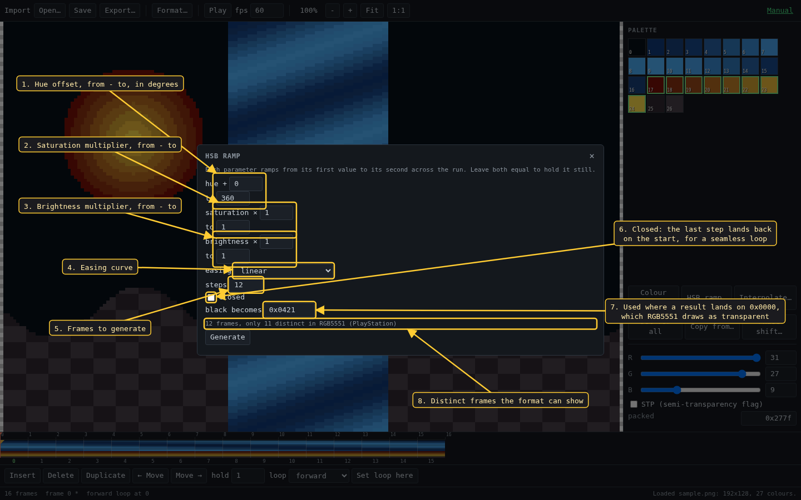
- Hue offset in degrees, from the first value to the second over the run. Equal values hold it still.
- Saturation multiplier, from - to.
- Brightness multiplier, from - to.
- The easing curve the ramp follows.
- How many frames to generate.
- closed: the last step comes back round to the start, so the ramp loops without a jump.
- RGB5551 only: the colour used when a result comes out as
0x0000, which would draw as transparent. - How many of the frames the format can tell apart. In this example only 11 of 12 differ at 5 bits per channel.
7. Interpolate
Adds frames between the existing ones, blending each pair. Only the selected entries are blended; the others are copied from the frame on the left.
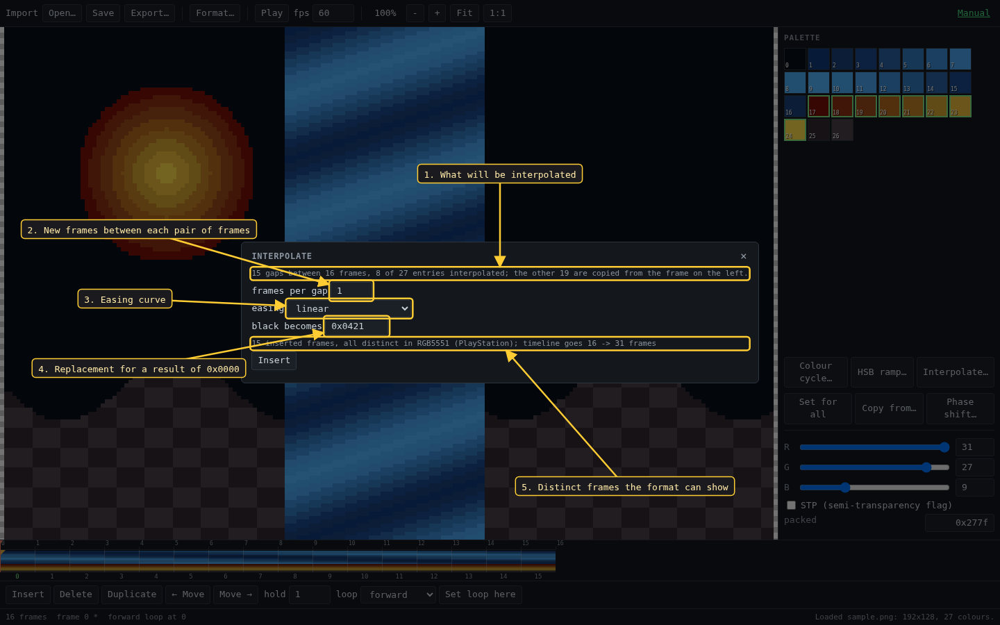
- What will be blended: how many gaps, and how many entries change.
- New frames per gap, 1 to 64.
- The easing curve.
- RGB5551 only: the replacement for a result of
0x0000. - How many frames will be inserted, how many differ, and the new length.
8. Phase shift
Delays the animation of the selected entries by some number of frames, so entries that animate identically can be set out of step.
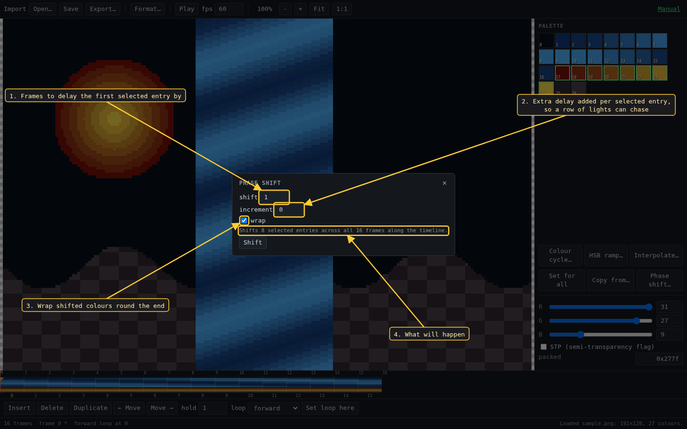
- How many frames to delay the first selected entry by. Negative shifts the other way.
- Extra delay added for each further selected entry, rounded down: a row of lights that chase each other.
- wrap: colours shifted past the last frame come back at the first. Off, they drop out and the vacated frames repeat their neighbour.
- What the shift will do.
9. Colour format
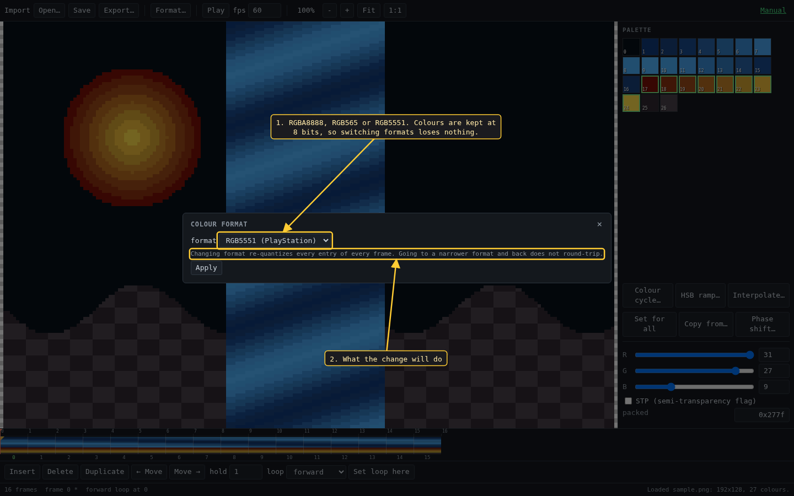
- Format… changes the format at any time. Colours are kept at full 8-bit precision and only shown through the format, so switching to RGB5551 and back loses nothing.
- What the change will do.
10. Export
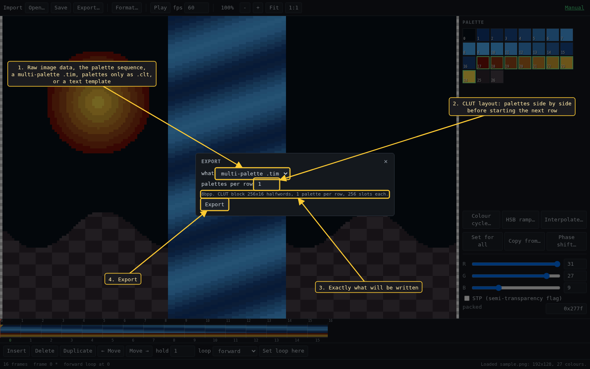
- What to write: the raw image data, the sequence of palettes, a
.timholding the image and every palette, the palettes alone as a.clt, or a text file from a template. - For the PlayStation formats: how many palettes sit side by side in the CLUT before the next row starts. 1 stacks them.
- Exactly what will be written: depth, CLUT size and layout.
- Export saves the file.
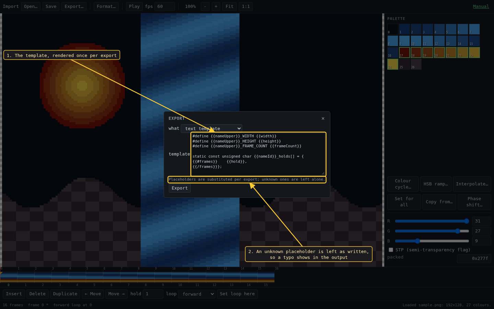
- The template.
{{#frames}}...{{/frames}}repeats once per frame,{{#loop}}...{{/loop}}and{{^loop}}...{{/loop}}depend on whether the animation loops, and:hexor:hex4formats a number in hexadecimal. - An unknown placeholder is left as written, so a typo shows up in the output.
Placeholders: name nameId nameUpper width height pixelCount paletteSize frameCount totalTicks fps loopStart (-1 when not looping) loopMode colorFormat colorFormatId, and inside {{#frames}}: index hold offset isLoopStart.
Save writes the project as .clutter.json, which Open… reads back.